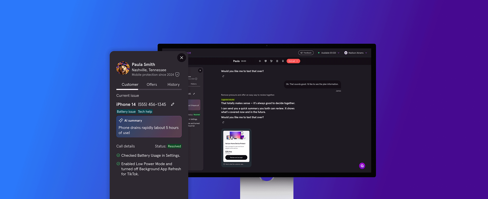

Asurion
Redesigning the primary tool for 10,000+ help desk and claims agents—a conversational, AI-powered workspace that makes every customer interaction feel simple, personal, and white-glove.

The Vision
Asurion's help desk and claims agents handle millions of customer interactions every year—troubleshooting tech issues, filing insurance claims, and resolving problems across chat and voice. Their current tools are fragmented, require too much manual work, and make it hard to deliver the fast, personal service customers expect.
Expert Workspace reimagines this experience. When an agent connects with a customer, the system works quietly in the background—bringing together the right tools, the right insights, and the right next steps. It should feel like a single, thoughtful conversation backed by deep expertise, showing customers that we know them and we're here to help.
The Leadership Challenge
Expert Workspace had been shaped by sales priorities for over a year. The product team was conflict-averse and reactive — caught between internal stakeholder pressure and a tool that wasn't working for the agents using it every day.
I started by defining a clear product vision and design principles, aligned design and product leadership around them, then took them to operations and sales to build broader organizational buy-in from the top down rather than waiting for alignment to trickle up from PMs.
The work is still early, but the direction is set and the first launches — shift summaries, post-call coaching, and end-of-shift performance recaps — will give agents visibility into their own performance for the first time.
Design Strategy
Features were prioritized by mapping agent pain points against business impact — starting with the moments that most directly affected performance visibility and coaching quality. The design process combined lightweight discovery sprints with rapid prototyping, keeping the feedback loop tight between agents, team leads, and product. Next steps include expanding the workspace to support real-time coaching prompts and deeper integration with quality assurance workflows.
Guiding Principles
Guidance, tools, and next steps in one clear workspace—so agents stay focused on the conversation, not the system.
Instantly recognize who we're helping and what they need—delivering a personalized, high-touch experience from the first message.
Plain, friendly language and transparent AI recommendations—clarity turns complexity into confidence.
Automate the busywork so agents can focus on real human connection—the quality that defines Asurion's service.
A platform that learns from millions of interactions while coaching agents in the moment to build confidence and sharpen skills.
My Role
I'm leading design strategy for Expert Workspace—defining the principles and vision that will shape how 10,000+ help desk and claims agents interact with customers every day. This means setting the direction for an AI-powered platform that needs to feel simple on the surface while being sophisticated underneath.
I work closely with product, engineering, and operations leadership to align on strategy, validate concepts with frontline agents, and ensure we're building tools that genuinely improve the customer experience—not just automate it.